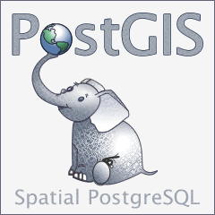

PostGIS開発グループ
概要
PostGISは、オブジェクトRDBであるPostgreSQLの拡張で、GIS (地理情報システム)オブジェクトを格納することができます。PostGISは、GiSTベースのR木空間インデクスをサポートし、GISオブジェクトの解析および処理を行う機能を持ちます。


本マニュアルは、3.1.0版のマニュアルです。
 この作品はクリエイティブ・コモンズ 表示 - 継承 3.0 非移植 ライセンスの下に提供されています。好きなようにこの材料を使うことができますが、PostGIS Project のクレジット提示を求めます。また可能な限りhttp://postgis.netへのリンクを求めます。
この作品はクリエイティブ・コモンズ 表示 - 継承 3.0 非移植 ライセンスの下に提供されています。好きなようにこの材料を使うことができますが、PostGIS Project のクレジット提示を求めます。また可能な限りhttp://postgis.netへのリンクを求めます。
目次
- 1. 導入
- 2. PostGISインストール
- 3. PostGIS管理
- 4. PostGISの使用
- 5. PostGISリファレンス
- 5.1. PostGIS Geometry/Geography/Box データ型
- 5.2. テーブル管理関数
- 5.3. ジオメトリ コンストラクタ
- 5.4. ジオメトリアクセサ
- 5.5. ジオメトリエディタ
- 5.6. ジオメトリ検証
- 5.7. 空間参照系関数
- 5.8. ジオメトリ入力
- 5.9. ジオメトリ出力
- 5.10. 演算子
- 5.11. 空間関係関数
- 5.12. 計測関数
- 5.13. 重ね合わせ関数
- 5.14. ジオメトリ処理関数
- 5.15. アフィン変換
- 5.16. クラスタリング関数
- 5.17. バウンディングボックス関数
- 5.18. 線型参照
- 5.19. トラジェクトリ関数
- 5.20. SFCGAL関数
- 5.21. ロングトランザクション機能
- 5.22. バージョン関数
- 5.23. Grand Unified Custom変数 (GUC)
- 5.24. トラブルシューティング関数
- 6. ラスタ リファレンス
- 7. PostGIS よくある質問
- 8. PostGISラスタ よくある質問
- 9. PostGIS関数索引
- 9.1. PostGIS集約関数
- 9.2. PostGISウィンドウ関数
- 9.3. PostGIS SQL-MM準拠関数
- 9.4. PostGISジオグラフィ対応関数
- 9.5. PostGISラスタ機能関数
- 9.6. PostGISジオメトリ/ジオグラフィ/ラスタのダンプ関数
- 9.7. PostGISボックス関数
- 9.8. 3次元対応PostGIS関数
- 9.9. PostGIS曲線ジオメトリ対応関数
- 9.10. PostGIS多面体サーフェス対応関数
- 9.11. PostGIS関数対応マトリクス
- 9.12. 新規作成/機能強化/変更されたPostGIS関数
- 9.12.1. PostGIS 3.1で新規作成/機能強化された関数
- 9.12.2. PostGIS 3.0で新規作成/機能強化された関数
- 9.12.3. PostGIS 2.5で新規作成/機能強化された関数
- 9.12.4. PostGIS 2.4で新規作成/機能強化された関数
- 9.12.5. PostGIS 2.3で新規作成/機能強化された関数
- 9.12.6. PostGIS 2.2で新規作成/機能強化された関数
- 9.12.7. PostGIS 2.2で大幅に変更された関数
- 9.12.8. PostGIS 2.1で新規作成/機能強化された関数
- 9.12.9. PostGIS 2.1で大幅に変更された関数
- 9.12.10. PostGIS 2.0で新規作成/機能強化/変更された関数
- 9.12.11. PostGIS 2.0で変更された関数
- 9.12.12. PostGIS 1.5で新規作成/機能強化/変更された関数
- 9.12.13. PostGIS 1.4で新規作成/機能強化/変更された関数
- 9.12.14. PostGIS 1.3で新規作成された関数
- 10. 問題を報告する
- A. 付録
- A.1. リリース 3.1.0beta1
- A.2. リリース 3.1.0alpha3
- A.3. リリース 3.1.0alpha2
- A.4. リリース 3.1.0alpha1
- A.5. リリース 3.0.0
- A.6. リリース 3.0.0rc2
- A.7. リリース 3.0.0rc1
- A.8. リリース 3.0.0beta1
- A.9. リリース 3.0.0alpha4
- A.10. リリース 3.0.0alpha3
- A.11. リリース 3.0.0alpha2
- A.12. リリース 3.0.0alpha1
- A.13. リリース 2.5.0
- A.14. リリース 2.4.5
- A.15. リリース 2.4.4
- A.16. リリース 2.4.3
- A.17. リリース 2.4.2
- A.18. リリース 2.4.1
- A.19. リリース 2.4.0
- A.20. リリース 2.3.3
- A.21. リリース 2.3.2
- A.22. リリース 2.3.1
- A.23. リリース 2.3.0
- A.24. リリース 2.2.2
- A.25. リリース 2.2.1
- A.26. リリース 2.2.0
- A.27. リリース 2.1.8
- A.28. リリース 2.1.7
- A.29. リリース 2.1.6
- A.30. リリース 2.1.5
- A.31. リリース 2.1.4
- A.32. リリース 2.1.3
- A.33. リリース 2.1.2
- A.34. リリース 2.1.1
- A.35. リリース 2.1.0
- A.36. リリース 2.0.5
- A.37. リリース 2.0.4
- A.38. リリース 2.0.3
- A.39. リリース 2.0.2
- A.40. リリース 2.0.1
- A.41. リリース 2.0.0
- A.42. リリース 1.5.4
- A.43. リリース 1.5.3
- A.44. リリース 1.5.2
- A.45. リリース 1.5.1
- A.46. リリース 1.5.0
- A.47. リリース 1.4.0
- A.48. リリース 1.3.6
- A.49. リリース 1.3.5
- A.50. リリース 1.3.4
- A.51. リリース 1.3.3
- A.52. リリース 1.3.2
- A.53. リリース 1.3.1
- A.54. リリース 1.3.0
- A.55. リリース 1.2.1
- A.56. リリース 1.2.0
- A.57. リリース 1.1.6
- A.58. リリース 1.1.5
- A.59. リリース 1.1.4
- A.60. リリース 1.1.3
- A.61. リリース 1.1.2
- A.62. リリース 1.1.1
- A.63. リリース 1.1.0
- A.64. リリース 1.0.6
- A.65. リリース 1.0.5
- A.66. リリース 1.0.4
- A.67. リリース 1.0.3
- A.68. リリース 1.0.2
- A.69. リリース 1.0.1
- A.70. リリース 1.0.0
- A.71. リリース 1.0.0RC6
- A.72. リリース 1.0.0RC5
- A.73. リリース 1.0.0RC4
- A.74. リリース 1.0.0RC3
- A.75. リリース 1.0.0RC2
- A.76. リリース 1.0.0RC1